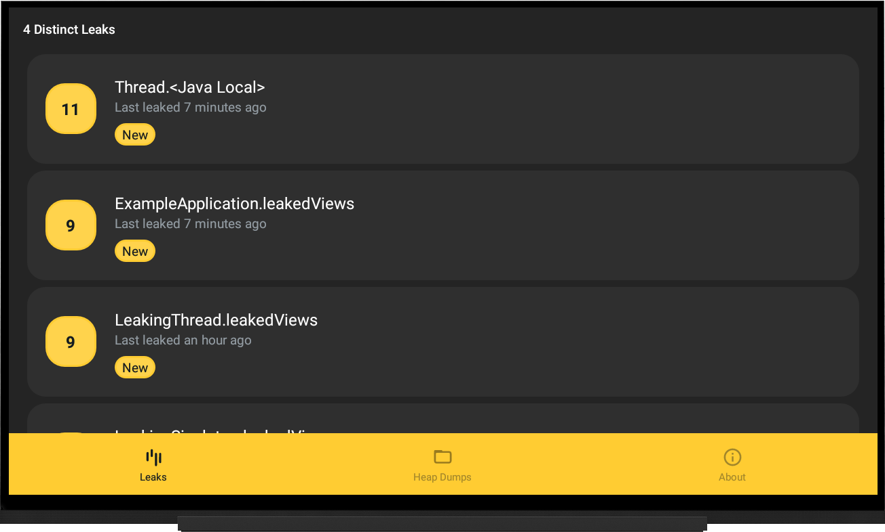
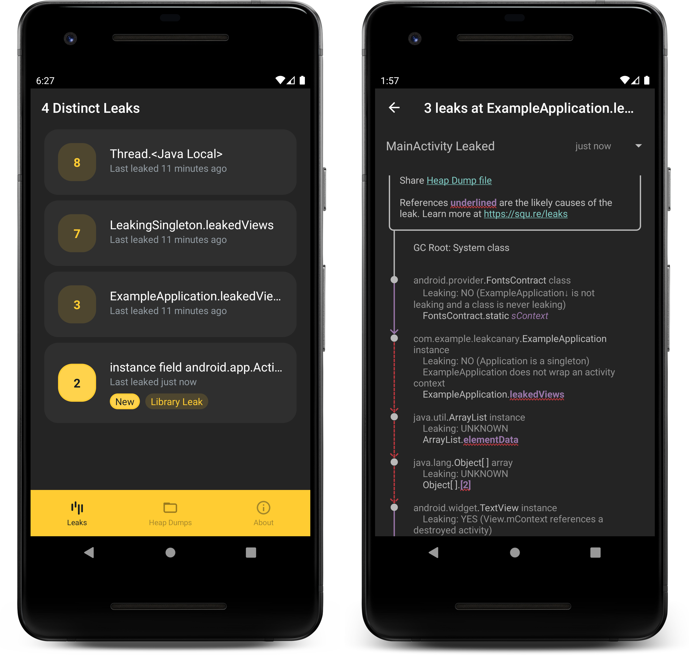

Change Log¶
Please thank our contributors 🙏 🙏 🙏.
Version 3.0 Alpha 4 (2024-05-10)¶
- Deleted the
shark-heap-growthartifact, the code has been merged into theshark*andleakcanary*modules. - New
leakcanary-android-testandleakcanary-android-uiautomatorartifacts. - Undo of breaking API changes that were introduced in alpha 1. The goal is to make the upgrade seamless. Please file an issue if you find an API breaking change from a 2.x release.
- Optimization: for known data structures that don’t reference the rest of the graph beyond the references we know about, we explore them locally at once and stop enqueuing their internals, which reduces the memory footprint and the IO reads.
- Revamped the heap growth detection APIs, added support for UI Automator and Shark CLI.
(note: I skipped from alpha 1 to alpha 4 because I messed up a few releases. Sorry!)
Heap Growth: Espresso test example¶
Add the dependency:
dependencies {
androidTestImplementation 'com.squareup.leakcanary:leakcanary-android-test:3.0-alpha-2'
}
Ensure your UI tests have enough heap by updating src/androidTest/AndroidManifest.xml:
<?xml version="1.0" encoding="utf-8"?>
<manifest
xmlns:android="http://schemas.android.com/apk/res/android">
<!-- Performing the heap growth analysis in process requires more heap. -->
<application
android:largeHeap="true"/>
</manifest>
class MyEspressoTest {
val detector = ObjectGrowthDetector
.forAndroidHeap()
.repeatingAndroidInProcessScenario()
@Test
fun greeter_says_hello_does_not_leak() {
// Runs repeatedly until the heap stops growing or we reach max heap dumps.
val heapGrowth = detector.findRepeatedlyGrowingObjects {
onView(withId(R.id.name_field)).perform(typeText("Steve"))
onView(withId(R.id.greet_button)).perform(click())
onView(withText("Hello Steve!")).check(matches(isDisplayed()))
}
assertThat(heapGrowth.growingObjects).isEmpty()
}
}
Heap Growth: UI Automator test example.¶
Add the dependency:
dependencies {
androidTestImplementation 'com.squareup.leakcanary:leakcanary-android-uiautomator:3.0-alpha-2'
}
class MyUiAutomatorTest {
val detector = ObjectGrowthDetector
.forAndroidHeap()
.repeatingUiAutomatorScenario()
@Test
fun clicking_welcome_does_not_leak() {
val device = UiDevice.getInstance(InstrumentationRegistry.getInstrumentation())
// Runs repeatedly until the heap stops growing or we reach max heap dumps.
val heapGrowth = detector.findRepeatedlyGrowingObjects {
device.findObject(By.text("Welcome!")).click()
}
assertThat(heapGrowth.growingObjects).isEmpty()
}
}
Heap Growth: Shark CLI¶
Download the Shark CLI Zip (alphas cannot be released to brew) and unzip it.
Run the heap-growth command:
$ ~/Downloads/shark-cli-3.0-alpha-2/bin/shark-cli -p com.example.app.debug heap-growth
Version 2.14 (2024-04-17)¶
- 🐛 #2650 Removed accidental usage of
SettableFuture, aWorkManagerinternal class, which will be removed in a future release of WorkManager. After updating WorkManager to that future release, all versions of LeakCanary from 2.8 to 2.13 will crash on leak analysis. To avoid a nasty surprise in the near future, update to LeakCanary 2.14. - 🔨 #2660 Add proguard mapping support for LeakCanary release.
- 🐛 #2531 Heap dump & leak lists not preserving list position when navigating.
- 🐤 #2615 Automatic fix of AOSP PermissionControllerManager leak (issuetracker.google.com/issues/318415056).
- 🐤 #2559 Ignore
UiModeManagerAOSP leak. - 💥 #2643 Fixed rare crash on RenderHeapDumpScreen.
Version 3.0 Alpha 1 (2024-01-09)¶
This alpha release marks the start of the work on LeakCanary 3. It’s not stable! While I intend to rework some APIs, I also want to minimize migration work. The best way to ensure migrations will go smoothly is to try upgrading to a 3.0 alpha and to let me know if you get any compile or runtime error.
Heap Growth¶
New APIs, not stable yet: the shark-heap-growth artifact contains APIs for writing test scenarios that detect repeated heap growth.
Here’s how it’s used with an Espresso test:
class MyEspressoTest {
@Test
fun greeter_says_hello_does_not_leak() {
// Runs in a loop until the heap stops growing or we reach max heap dumps.
val heapTraversal = HeapGrowthDetector.detectRepeatedHeapGrowth {
// Runs repeatedly until the heap stops growing or we reach maxHeapDumps.
onView(withId(R.id.name_field)).perform(typeText("Steve"))
onView(withId(R.id.greet_button)).perform(click())
onView(withText("Hello Steve!")).check(matches(isDisplayed()))
}
assertThat(heapTraversal.growingNodes).isEmpty()
}
}
Here’s an example set up, this is all very manual for now.
Add the new dependency:
dependencies {
androidTestImplementation 'com.squareup.leakcanary:shark-heap-growth:3.0-alpha-1'
androidTestImplementation 'com.squareup.leakcanary:leakcanary-android-core:3.0-alpha-1'
}
Create an implementation setup for Espresso in process UI tests:
import leakcanary.AndroidDebugHeapDumper
import shark.AndroidReferenceMatchers
import shark.AndroidReferenceReaderFactory
import shark.CloseableHeapGraph
import shark.DiffingHeapGrowthDetector
import shark.HeapGraphProvider
import shark.HeapTraversal
import shark.HprofHeapGraph.Companion.openHeapGraph
import shark.IgnoredReferenceMatcher
import shark.LiveHeapGrowthDetector
import shark.LoopingHeapGrowthDetector
import shark.MatchingGcRootProvider
import shark.ReferencePattern.InstanceFieldPattern
import java.io.File
import java.text.SimpleDateFormat
import java.util.Date
import java.util.Locale
/**
* Heap growth detector for in process Espresso UI tests.
*
* Call [LiveHeapGrowthDetector.detectRepeatedHeapGrowth] with a scenario to repeat,
* then assert that the resulting [shark.HeapTraversalWithDiff.growingNodes] is empty.
*/
val HeapGrowthDetector by lazy {
val referenceMatchers = AndroidReferenceMatchers.appDefaults +
HeapTraversal.ignoredReferences +
// https://cs.android.com/android/_/android/platform/frameworks/base/+/6985fb39f07294fb979b14ba0ebabfd2fea06d34
IgnoredReferenceMatcher(InstanceFieldPattern("android.os.StrictMode", "sLastVmViolationTime"))
val dateFormat = SimpleDateFormat("yyyy-MM-dd_HH-mm-ss_SSS'-heap-growth.hprof'", Locale.US)
val uploadedTracesDirectory = File("/sdcard/traces/")
uploadedTracesDirectory.mkdirs()
check(uploadedTracesDirectory.exists()) {
"Expected heap dump folder to exist: ${uploadedTracesDirectory.absolutePath}"
}
val heapGraphProvider = HeapGraphProvider {
val fileName = dateFormat.format(Date())
val heapDumpFile = File(uploadedTracesDirectory, fileName)
AndroidDebugHeapDumper.dumpHeap(heapDumpFile)
check(heapDumpFile.exists()) {
"Expected file to exist after heap dump: ${heapDumpFile.absolutePath}"
}
val realGraph = heapDumpFile.openHeapGraph()
object : CloseableHeapGraph by realGraph {
override fun close() {
realGraph.close()
heapDumpFile.delete()
}
}
}
LiveHeapGrowthDetector(
maxHeapDumps = 5,
heapGraphProvider = heapGraphProvider,
scenarioLoopsPerDump = 5,
detector = LoopingHeapGrowthDetector(
DiffingHeapGrowthDetector(
referenceReaderFactory = AndroidReferenceReaderFactory(referenceMatchers),
gcRootProvider = MatchingGcRootProvider(referenceMatchers)
)
)
)
}
Ensure your UI tests have enough heap by updating src/androidTest/AndroidManifest.xml:
<?xml version="1.0" encoding="utf-8"?>
<manifest
xmlns:android="http://schemas.android.com/apk/res/android">
<!-- Performing the heap growth analysis in process requires more heap. -->
<application
android:largeHeap="true"/>
</manifest>
Reference readers¶
New APIs, not stable yet: ReferenceReader implementations aka expanders, are now public APIs. The names might change. These class define how LeakCanary traverses the graph, and allow for the creating of virtual references, as introduced here. These new APIs make it possible to add support for more custom data structures, and they’re also useful when working directly with the shark APIs (for example, these APIs were necessary to build the heap growth detection tooling mentioned above).
ObjectWatcher APIs refactor¶
#2612 is a first attempt at refactoring the reachability APIs. I already found backward compatibility issues (#2617), will fix in the next alpha, and probably still change the API shape.
The general purpose of this refactor is to move away from the static singletons and high coupling of the current implementation, making the reachability APIs more useful in a variaty of contexts.
Other bug fixes and improvements 🐛🔨¶
- Bumped Kotlin to 1.8.21
- Dropped support for detecting support fragment leaks: apps should all have migrated to Android X by now, and if not they can easily add their own implementation back.
This list reflects only a subset of all changes. For more details, the full diff.
Version 2.13 (2024-01-03)¶
- 🐛 #2565 Fix AndroidX Fragments incorrectly marked as leaking if detached but not destroyed.
- 💥 #2568 Fixed missing
RECEIVER_EXPORTEDflag when callingregisterReceiver()on API 34+. - 🔨 #2555 Binder stubs are now called out in leak traces.
- 🐤 #2601 Added several known manufacturer & framework leaks.
Version 2.12 (2023-06-29)¶
- 💥 #2527
LifecycleRegistryinandroidx.lifecycle:lifecycle-runtimewas migrated to kotlin and itsmStatefield name changed tostatewhich broke LeakCanary expectations. - 🐤 #2545 Added several known manufacturer & framework leaks.
Version 2.11 (2023-05-17)¶
- 🐛 #1764 Ignore phantom classes that were unloaded than reloaded (long time LeakCanary bug).
- 🐛 #2471 Fix LeakCanary introducing a weird leak in Google’s CI infra.
- 🐛 #2496 Fix broken ViewModel leak detection
Version 2.10 (2022-11-10)¶
Experimental Neo4j heap dump exploration¶
shark-cli has a new experiment neo4j command that will convert a heap dump into an embedded Neo4j database and then open Neo4j Browser to explore the heap dump.
brew install leakcanary-shark
shark-cli --process com.example.app.debug neo4j

Other bug fixes and improvements 🐛🔨¶
- 🐤 #2440 Add Android 13
POST_NOTICICATIONSpermission as well as a newLeakCanary.Config.showNotificationsconfig to disable notifications entirely. - 🐤 #2416 Add Android 13 monochrome icon.
- 💥 #2371 Fix db crash when navigating heap dump screen.
- 🐛 #2393 Allow LeakCanary to be defined as an AndroidX Startup dependency.
- 💥 #2430 Fix ShortcutManager crash on Android TV.
- 💥 #2382 Fix heap dump close crash.
This list reflects only a subset of all changes. For more details, see the 2.10 Milestone and the full diff.
Version 2.9.1 (2022-04-20)¶
Preface¶
What are some things you’d like to see in a future LeakCanary 3 version? Tell me on Twitter!
Some ideas I’m playing with:
- Moving heap analysis leak visualisation to a separate single app (written with Compose!) available on the PlayStore.
- Bumping Okio to 3.0
- Multiplatform heap analysis? Analyze a JVM heap dump in your browser?!
- Visualize the heap dominators / retained size as a treemap.
- A backend for LeakCanary?
Anyway, that’s still very much the future, let’s talk about what’s in 2.9.1 now!
New metrics in heap analysis metadata¶
I built LeakCanary to help fix leaks, but in doing so I accidentally wrote a fairly flexible heap dump parser. Since we’re parsing the heap to find leaks anyway, we might as well report additional interesting metrics. Here’s what you’ll now see in the heap dump metadata:
- Class count: count of loaded classes
- Instance count
- Primitive array count
- Object array count
- Thread count
- Heap total bytes
- Bitmap count
- Bitmap total bytes
- Large bitmap count (bitmaps with more pixels than 1.1x the pixels on screen)
- Large bitmap total bytes
- SQLiteDatabase in memory (open or closed, as well as their file path)
This is just a first pass, feedback and ideas welcome!
Performance improvements¶
The heap analysis now traverses the heap dump using RandomAccessFile instead of FileChannel.transferTo() and is now 40% faster on API 23 and 20% faster on newer APIs.
Also, sticky class GC roots are now deduplicated, which great reduces the memory footprint of LeakCanary on API 23 (#2324). You can read about the related investigation on py.hashnode.dev.
Breaking change: FailTestOnLeakRunListener deleted¶
FailTestOnLeakRunListener, FailTestOnLeak and FailAnnotatedTestOnLeakRunListener were deprecated in LeakCanary 2.8 as they rely on hacking the Android Test library internals which have since changed, and have been replaced by LeakAssertions.assertNoLeak() and the DetectLeaksAfterTestSuccess test rule. I was initially planning of keep these around, but as I tried to increase API level coverage in LeakCanary I needed to upgrade the Android Test library to a more recent version, and the hacks now had compilation errors. So they’re gone: #2282. If you can’t use the test rules just yet, you’re welcome to copy paste the listener implementations in your own codebase.
Other bug fixes and improvements 🐛🔨¶
- 💥 #2367 Fixed
AndroidLeakFixes.FLUSH_HANDLER_THREADS(HandlerThreadcan have a nullLooper). - 💥 #2286 Update Curtains to include Proguard rules and prevent
WindowCallbackWrappercrashes. - 💥 #2294 Fixed
WindowDelegateCallback.onMenuOpened()crash. - 🐤 #2328 Fixed ToastEventListener leak. Sorry 😬!
- 💥 #2310 Fixed crash when using WorkManager < 2.1.0.
- 💥 #2342 Fixed crash when
HashSet.mapis null (which isn’t supposed to happen, oh well, Android 🤷♂️). - 🐛 #2117 Fixed StrictMode disk read violations.
- 💥 #2351 Fixed a race causing a startup crash.
- 💥 #2315 Fixed crash when using Okio 1.14.
- 🐛 #2182 Fixed multi rescheduling of
BackgroundListener$checkAppInBackground. - 💥 #2360 Fixed SQLiteOpenHelper concurrent creation crash.
This list reflects only a subset of all changes. For more details, see the 2.9 Milestone and the full diff.
Version 2.8.1 (2022-01-06)¶
This is a bugfix release, a quick follow up to 2.8 which had a few major issues 😅. If you haven’t yet, you should definitely read the 2.8 changelog.
Thanks¶
Please thank @dicosta, @Goooler, @plnice, @preetha1326 for their contributions, bug reports and feature requests 🙏 🙏 🙏.
Crash fixes 💥💥💥¶
This patch release fixes not 1, not 2, but 3 crashes!
- 💥 #2268 WorkManager expedited request crashes before API 31.
- 💥 #2270 Updating
LeakCanary.configcrashes whenAppWatcheris not installed. - 💥 #2271 Analysis failure on API 25 because
HashMap$EntrybecameHashMap$HashMapEntry(on API 25) before it finally changed toHashMap$Node.
For more details, see the 2.8.1 Milestone and the full diff.
Version 2.8 (2022-01-04)¶
Note: please update to 2.8.1 instead.
Preface¶
The last release was 9 months ago. What happened?! Well, soon after releasing LeakCanary 2.7, I had my 2nd baby, a wonderful daughter 😍. Having 2 young kids leaves a lot less time available for Open Source work… but it’s worth it!
― P.Y.
Thanks¶
Please thank @aaronweihe, @alhah, @Andre-max, @AoraMD, @BraisGabin, @breezenan, @Goooler, @iliaskomp @Jeff11, @jmnwong, @IdioticMadman, @keyur1sst, @lchen8, @leinardi, @Maragues, @mars885, @mateuszkwiecinski, @matiash, @maxxx, @preetha1326, @SimonMarquis, @slavonnet, @Sonphil, @summerlyr, @SUPERCILEX, @utwyko, @ZacSweers, @ziranshang, @zoltish for their contributions, bug reports and feature requests 🙏 🙏 🙏.
Improved support for data structure internals¶
🤓 Inspired by Android Studio, LeakCanary’s node discovery during heap graph traversal is now abstracted away. This allows overlaying logical structure over common data structure internals.
😅 WHAT?!
👉 This means we can make known data structures look more like their APIs than their internals. For example, developers tend to think of setting a HashMap entry as map["key"] = value rather than map.table[hash("key")].next.next.next = Node(value), which is what LeakCanary would previously show in its leak traces.
Let’s look at a HashMap example:
class CheckoutController {
val tabs = HashMap<String, Tab>()
fun addItemsTab(tab: Tab) {
tabs["ItemsTab"] = tab
}
}
If the Tab instance holds on to a view, we might see a leak trace that would look like this:
│ ...
├─ com.example.CheckoutController instance
│ ↓ CheckoutController.tabs
├─ java.util.HashMap instance
│ ↓ HashMap.table
├─ java.util.HashMap$Node[] array
│ ↓ HashMap$Node[42]
├─ java.util.HashMap$Node instance
│ ↓ HashMap$Node.next
├─ java.util.HashMap$Node instance
│ ↓ HashMap$Node.value
├─ com.example.Tab instance
│ ...
With the improved data structure support, the leak trace is much clearer (also note how the ItemsTab string key is now surfaced):
│ ...
├─ com.example.CheckoutController instance
│ ↓ CheckoutController.tabs
├─ java.util.HashMap instance
│ ↓ HashMap[ItemsTab]
├─ com.example.Tab instance
│ ...
Another benefit of this change is that leak signatures become less dependent of the runtime, and therefore are more consistent. This is especially true for any data structure that relies on a linked list (HashMap, LinkedList, MessageQueue, …). Currently LeakCanary supports a limited set of common data structures from Apache Harmony, Open JDK, and the Android SDK. Let me know what else you need!
ObjectAnimator leaks¶
LeakCanary will now detect leaks that trigger when forgetting to cancel ObjectAnimator. This new feature is enabled by the node discovery changes described above!
Let’s say you accidentally start an infinite ObjectAnimator and never cancel it, like so:
class ExampleActivity : Activity() {
override fun onCreate(savedInstanceState: Bundle?) {
super.onCreate(savedInstanceState)
setContentView(R.layout.main_activity)
findViewById<Button>(R.id.button).setOnClickListener { view ->
ObjectAnimator.ofFloat(view, View.ALPHA, 0.1f, 0.2f).apply {
duration = 100
repeatMode = ValueAnimator.REVERSE
repeatCount = ValueAnimator.INFINITE
start()
}
}
}
}
In previous releases, LeakCanary would detect that the animated view is leaking but it wouldn’t be able to find the leak and instead would report it as an unreachable object: An unreachable object is still in memory but LeakCanary could not find a strong reference path from GC roots.
LeakCanary now reports the leak and adds animator state information, helping detect and fix any infinite ObjectAnimator.
┬───
│ GC Root: Thread object
│
├─ java.lang.Thread instance
│ Leaking: NO (the main thread always runs)
│ Thread name: 'main'
│ ↓ Thread.threadLocals
│ ~~~~~~~~~~~~
...
├─ android.animation.ObjectAnimator instance
│ Leaking: UNKNOWN
│ mListeners = null
│ mPropertyName = null
│ mProperty.mName = alpha
│ mProperty.mType = java.lang.Float
│ mInitialized = true
│ mStarted = true
│ mRunning = true
│ mAnimationEndRequested = false
│ mDuration = 100
│ mStartDelay = 0
│ mRepeatCount = INFINITE (-1)
│ mRepeatMode = REVERSE (2)
│ ↓ ObjectAnimator.mTarget
│ ~~~~~~~
╰→ android.widget.Button instance
Leaking: YES (View.mContext references a destroyed activity)
To learn more, see this AOSP issue: ObjectAnimator.mTarget weak ref creates memory leaks on infinite animators.
Leak detection in tests¶
Previous releases of leakcanary-android-instrumentation introduced a FailTestOnLeakRunListener which could run leak detection after each UI tests. Unfortunately FailTestOnLeakRunListener relied on a hack around androidx.test internals to report failures. The internals keep changing with every androidx.test release and breaking FailTestOnLeakRunListener 😭.
FailTestOnLeakRunListener is now deprecated (👋) and replaced by the DetectLeaksAfterTestSuccess test rule, which you can add to your test like any normal test rule.
Additionally, you can call LeakAssertions.assertNoLeak() from anywhere in your instrumentation tests. You can also annotate tests with @SkipLeakDetection (for that to work you’ll also need to set up the TestDescriptionHolder test rule).
class CartTest {
@get:Rule
val rules = RuleChain.outerRule(TestDescriptionHolder)
.around(DetectLeaksAfterTestSuccess())
.around(ActivityScenarioRule(CartActivity::class.java))
@Test
fun addItemToCart() {
// ...
}
@SkipLeakDetection("See #1234")
@Test
fun removeItemFromCart() {
// ...
}
}
Android 12¶
Hopefully this time we fixed everything that Android 12 broke: missing exported:true tags, missing pending intent flags, and ForegroundServiceStartNotAllowedException crashes. If not, let us know! Can’t wait for Android 13 to break everything again 🤬.
WorkManager¶
Running an Android Service without crashing (ForegroundServiceStartNotAllowedException…) is becoming harder with every release of Android, so I got rid of the LeakCanary heap analyzer service! Instead, LeakCanary leverages WorkManager if you already have it as a dependency. If you don’t use WorkManager, then LeakCanary will fall back to using a simple thread.
Note: I recommend using at least WorkManager 2.7.0 as it adds the WorkRequest.Builder.setExpedited() API which LeakCanary leverages if available.
Multi process¶
Switching to WorkManager also impacts the LeakCanary multi process approach, which now leverages WorkManager remote jobs. Blog on how I got this working: WorkManager multi-process for libraries.
Multi process is harder to get right so you should only use this if LeakCanary frequently runs out of memory while performing the heap analysis. Here are the updated set up steps:
1) Add the leakcanary-android-process dependency and keep the leakcanary-android dependency.
dependencies {
debugImplementation 'com.squareup.leakcanary:leakcanary-android:2.8'
debugImplementation 'com.squareup.leakcanary:leakcanary-android-process:2.8'
}
2) Skip the initialization code in the Application class
class ExampleApplication : Application() {
override fun onCreate() {
if (LeakCanaryProcess.isInAnalyzerProcess(this)) {
return
}
super.onCreate()
// normal init goes here, skipped in :leakcanary process.
}
}
That’s it! Note that event listeners (see below) related to the analysis will fire in the remote process.
AndroidX App Startup¶
LeakCanary now optionally supports the AndroidX App Startup library. All you need to do is replace the leakcanary-android dependency with leakcanary-android-startup:
dependencies {
// Remove the normal leakcanary-android dependency
// debugImplementation 'com.squareup.leakcanary:leakcanary-android:2.8'
debugImplementation 'com.squareup.leakcanary:leakcanary-android-startup:2.8'
}
Note 1: leakcanary-android adds the code for automatic installl to leakcanary-android-core. If you’re calling AppWatcher.manualInstall(), you can depend directly on leakcanary-android-core instead of leakcanary-android, and you won’t need the disable any automatic install.
Note 2: the same principle applies to leakcanary-object-watcher-android: it depends on leakcanary-object-watcher-android-core and adds automatic install, while leakcanary-object-watcher-android-startup leverages the App Startup library. Same for plumber-android, plumber-android-core and plumber-android-startup.
Event listeners¶
LeakCanary.Config has a new eventListeners field allowing you to react to LeakCanary’s lifecycle. If you want to customize this, you most likely should be keeping the default list of listeners and add or remove from it.
For example, if you want to disable the LeakCanary toast:
LeakCanary.config = LeakCanary.config.run {
copy(
eventListeners = eventListeners.filter {
it !is ToastEventListener
}
)
}
If you want to upload heap analysis results:
LeakCanary.config = LeakCanary.config.run {
copy(
eventListeners = eventListeners + EventListener { event ->
if (event is HeapAnalysisSucceeded) {
// Upload event.heapAnalysis
}
}
)
}
Note: Leakcanary.Config.onHeapAnalyzedListener still works but is now deprecated.
Feedback welcome on this new API!
Other bug fixes and improvements 🐛🔨¶
- #2096 Opening / sharing heap dump files now supports LeakCanary as an option.
- #2210 First Compose dedicated object inspectors!
- #2121 Support for customizing the heap dumper.
This list reflects only a subset of all changes. For more details, see the 2.8 Milestone and the full diff.
Version 2.7 (2021-03-26)¶
Please thank @chao2zhang, @ihrupin, @jzbrooks, @msfjarvis, @reneargento, @Unpublished for their contributions, bug reports and feature requests 🙏 🙏 🙏.
Finer grained root view watching¶
In version 2.6, LeakCanary added detection of root views retained after View.onDetachedFromWindow(). This helps find more leaks, but unfortunately some Android widgets keep a detached root view around to reattach it later (e.g. spinner). App developers also sometimes do the same with dialogs, keeping a single instance around and calling show() and hide() as needed. As a result, LeakCanary would report leaks that were actually not leaks.
In version 2.7, the default behavior changed: LeakCanary will continue to detect leaks of toasts, but will ignore root views created by a PopupWindow (which is what Android widgets use). It will also ignore root views created by a dialog by default, and you can turn this back on by setting the leak_canary_watcher_watch_dismissed_dialogs resource boolean to true:
<?xml version="1.0" encoding="utf-8"?>
<resources>
<bool name="leak_canary_watcher_watch_dismissed_dialogs">true</bool>
</resources>
This is implemented using a new Square library: Curtains.
Targeting Android 12¶
We fixed two issues for apps that want to target Android 12:
- #2074 Activities that use intent filters must declare the
android:exportedattribute. - #2079 PendingIntent requires the
FLAG_IMMUTABLEflag.
Bug fixes and improvements 🐛🔨¶
- #2075 Fixed crash when sharing heap dumps.
- #2067 Fixed crash when opening leaks from older versions (before 2.6) of LeakCanary.
- #2049 Fixed Plumber crash due to R8 shaking AndroidLeakFixes.
- #2084 Fixed Shark crash when used from multiple threads.
- #2054 🙈🙉🙊 Blocked Monkeys from deleting leaks.
- #2069 Added X button to the root leak activity (for custom devices with no back button)
- #2091 Added receiver details if LoadedApk shows up in the leaktrace.
- #2083 Added service status details (created or not) to leaktrace.
- #2099 Retry button if analysis fails.
- #2066 When heap analysis in UI tests is skipped and NoAnalysis is returned, NoAnalysis now includes a reason to help debug why it didn’t run.
- #2000 The LeakCanary CI now leverages GitHub actions instead of Travis.
For more details, see the 2.7 Milestone and the full diff.
Version 2.6 - Christmas Release 🎄 (2020-12-24)¶
Please thank @chao2zhang, @ChaosLeung, @LitterSun, @mickverm, @opatry, @Thomas-Vos, @tricknology, @rahul-a, @samoylenkodmitry, @sing0055, @ubiratansoares for their contributions, bug reports and feature requests 🙏 🙏 🙏.
This Christmas Release includes several external contributions and a bunch of cool new features! 🎁🎁
Detecting root views retained after View.onDetachedFromWindow()¶
On Android, every displayed view hierarchy is attached to a window, whether it be the view hierarchy of an activity, a dialog, a toast or a chat head. After a view hierarchy is detached from its window, it should be garbage collected.
LeakCanary already detects leaks of activity view hierarchies because retained detached views reference their activity context and LeakCanary detects activities retained after Activity.onDestroy(). In this new release, LeakCanary will now detect the leak of a dialog view hierarchy as soon as that dialog is dismissed, or any other view that is passed to WindowManager.removeView().
Detecting services retained after Service.onDestroy()¶
After an Android service is destroyed, it should be garbage collected. Unfortunately, the Android SDK does not provide any generic API to observe the service lifecycle. We worked around that using reflection on greylist APIs (details in #2014). Let’s hope this motivates the Android team to build the APIs developers need.
Configuring retained object detection¶
With the detection of 2 new types of retained objects, we’re also adding APIs to configure which watchers should be installed as well as adding filtering capabilities.
First, disable the automatic install:
<?xml version="1.0" encoding="utf-8"?>
<resources>
<bool name="leak_canary_watcher_auto_install">false</bool>
</resources>
Then you can install LeakCanary manually. LeakCanary 2.6 comes with 4 watchers installed by default: ActivityWatcher, FragmentAndViewModelWatcher, RootViewWatcher, ServiceWatcher. Here’s an example to get all the default watchers except ServiceWatcher:
class DebugExampleApplication : ExampleApplication() {
override fun onCreate() {
super.onCreate()
val watchersToInstall = AppWatcher.appDefaultWatchers(application)
.filter { it !is ServiceWatcher }
AppWatcher.manualInstall(
application = application,
watchersToInstall = watchersToInstall
)
}
}
LeakCanary introduces a new functional (SAM) interface implemented by ObjectWatcher: ReachabilityWatcher, with a ReachabilityWatcher.expectWeaklyReachable() method that replaces the now deprecated ObjectWatcher.watch() method. You can create the default watcher instances with a custom ReachabilityWatcher that delegates to AppWatcher.objectWatcher but filters out specific instances (e.g. BadSdkLeakingFragment):
class DebugExampleApplication : ExampleApplication() {
override fun onCreate() {
super.onCreate()
val delegate = ReachabilityWatcher { watchedObject, description ->
if (watchedObject !is BadSdkLeakingFragment) {
AppWatcher.objectWatcher.expectWeaklyReachable(watchedObject, description)
}
}
val watchersToInstall = AppWatcher.appDefaultWatchers(application, delegate)
AppWatcher.manualInstall(
application = application,
watchersToInstall = watchersToInstall
)
}
}
With these new configuration options, AppWatcher.config is now deprecated and a no-op.
Dumping the heap on screen off¶
The default threshold to dump the heap is 5 retained objects when the app is visible, and 1 retained object when the app is not visible. Up until now, visible meant “the app has at least one activity in started state”. In LeakCanary 2.6, the app will now be considered not visible if the device screen is off, lowering the threshold to trigger heap dumps when you turn off the device screen.
LeakCanary for releases¶
LeakCanary 2.6 introduces a new artifact: leakcanary-android-release. This artifact exposes APIs to run a heap analysis in release builds, in production.
Danger
Everything about this is experimental. Running a heap analysis in production is not a very common thing to do, and we’re still learning and experimenting with this. Also, both the artifact name and the APIs may change.
dependencies {
// debugImplementation because LeakCanary should only run in debug builds.
debugImplementation 'com.squareup.leakcanary:leakcanary-android:2.6'
// NEW: LeakCanary for releases!
releaseImplementation 'com.squareup.leakcanary:leakcanary-android-release:2.6'
// Optional: detect retained objects. This helps but is not required.
releaseImplementation 'com.squareup.leakcanary:leakcanary-object-watcher-android:2.6'
}
Here’s a code example that runs a heap analysis when the screen is turned off or the app enters background, checking first if a Firebase Remote Config flag is turned on, and uploading the result to Bugsnag:
class ReleaseExampleApplication : ExampleApplication() {
// Cancels heap analysis if "heap_analysis_flag" is false.
private val flagInterceptor by lazy {
object : HeapAnalysisInterceptor {
val remoteConfig: FirebaseRemoteConfig = TODO()
override fun intercept(chain: Chain): HeapAnalysisJob.Result {
if (remoteConfig.getBoolean("heap_analysis_flag")) {
chain.job.cancel("heap_analysis_flag false")
}
return chain.proceed()
}
}
}
private val analysisClient by lazy {
HeapAnalysisClient(
// Use private app storage. cacheDir is never backed up which is important.
heapDumpDirectoryProvider = { cacheDir },
// stripHeapDump: remove all user data from hprof before analysis.
config = HeapAnalysisConfig(stripHeapDump = true),
// Default interceptors may cancel analysis for several other reasons.
interceptors = listOf(flagInterceptor) + HeapAnalysisClient.defaultInterceptors(this)
)
}
private val analysisExecutor by lazy {
Executors.newSingleThreadExecutor {
thread(start = false, name = "Heap analysis executor") {
android.os.Process.setThreadPriority(THREAD_PRIORITY_BACKGROUND)
it.run()
}
}
}
private val analysisCallback: (Result) -> Unit by lazy {
val uploader = BugsnagHeapAnalysisUploader(this@ReleaseExampleApplication)
{ result ->
if (result is Done) {
uploader.upload(result.analysis)
}
}
}
override fun onCreate() {
super.onCreate()
// Delete any remaining heap dump (if we crashed)
analysisExecutor.execute {
analysisClient.deleteHeapDumpFiles()
}
// Starts heap analysis on background importance
BackgroundTrigger(
application = this,
analysisClient = analysisClient,
analysisExecutor = analysisExecutor,
analysisCallback = analysisCallback
).start()
// Starts heap analysis when screen off
ScreenOffTrigger(
application = this,
analysisClient = analysisClient,
analysisExecutor = analysisExecutor,
analysisCallback = analysisCallback
).start()
}
/**
* Call this to trigger heap analysis manually, e.g. from
* a help button.
*
* This method returns a `HeapAnalysisJob` on which you can
* call `HeapAnalysisJob.cancel()` at any time.
*/
fun triggerHeapAnalysisNow(): HeapAnalysisJob {
val job = analysisClient.newJob()
analysisExecutor.execute {
val result = job.execute()
analysisCallback(result)
}
return job
}
}
The Bugsnag uploader:
class BugsnagHeapAnalysisUploader(applicationContext: Application) {
private val bugsnagClient: Client
init {
bugsnagClient = Client(
applicationContext,
BUGSNAG_API_KEY,
DO_NOT_ENABLE_EXCEPTION_HANDLER
)
bugsnagClient.setSendThreads(false)
}
fun upload(heapAnalysis: HeapAnalysis) {
when (heapAnalysis) {
is HeapAnalysisSuccess -> {
val exception = HeapAnalysisReport()
bugsnagClient.notify(exception) { report ->
val metaData = report.error.metaData
metaData.addToTab("Heap Analysis", "result", heapAnalysis.toString())
}
}
is HeapAnalysisFailure -> {
// Please file any reported failure to
// https://github.com/square/leakcanary/issues
bugsnagClient.notify(heapAnalysis.exception)
}
}
}
// Exception with fake unique stacktrace to send all reports to the same error entry.
class HeapAnalysisReport : Exception("Check the HEAP ANALYSIS tab") {
override fun fillInStackTrace(): Throwable {
stackTrace = arrayOf(
StackTraceElement(
"HeapAnalysisReport",
"analyzeHeap",
"HeapAnalysisReport.kt",
1
)
)
return this
}
}
companion object {
private const val BUGSNAG_API_KEY = YOUR_BUGSNAG_API_KEY
private const val DO_NOT_ENABLE_EXCEPTION_HANDLER = false
}
}
More leak fixes in Plumber¶
We added 3 new automatic fixes for known AOSP leaks in plumber-android (details: #1993). As a reminder, plumber-android is automatically included when you add leakcanary-android, and you can add it manually for build types that don’t include LeakCanary:
dependencies {
// leakcanary-android adds plumber-android to debug builds
debugImplementation 'com.squareup.leakcanary:leakcanary-android:2.6'
// This adds plumber-android to all build types
implementation 'com.squareup.leakcanary:plumber-android:2.6'
}
Bug fixes and improvements 🐛🔨¶
- #1948 Leakcanary is now compiled against Kotlin 1.4 (while staying 1.3 compatible) to support Functional (SAM) interfaces.
- #1956 The retained object size is displayed as a human readable output (KB, MB, …).
- #1976 Improved default object inspectors and leak finders for
ViewandContext. - #1972 Fields are printed with the parent class name that holds the field in leak traces.
- #1981 Fixed StrictMode policy violation (main thread read from disk).
- #1977 Report objects that are not strongly reachable.
- #2018 & #2019 Fixed crashes in LeakCanary UI (discovered by Monkey tests).
- #2015 Fixed crash on Android < 16.
- #2023 Fixed crash in plugin projects.
For more details, see the 2.6 Milestone and the full diff.
Version 2.5 (2020-10-01)¶
Please thank @Amokrane, @Armaxis, @askont, @chao2zhang, @daniil-shevtsov, @eygraber, @msfjarvis, @mzgreen, @lchen8, @rpattabi, @sahil2441, @SylvainGirod, @vhow for their contributions, bug reports and feature requests 🙏 🙏 🙏.
Heap analysis is twice as fast 🐤💨¶
No one asked, so we delivered! We rewrote several core components in Shark (LeakCanary’s heap analyzer) to dramatically reduce IO reads and allocations while keeping memory constant. More details on Twitter: thread by @ArtemChubaryan and thread by @Piwai.
Compute retained size within the leak trace¶
Previously, LeakCanary computed the retained size for the leaking object (the last object in the leak trace). However, the bad reference causing objects to leak is often higher up in the leak trace and everything that it holds onto is actually leaking. So LeakCanary now computes the retained size for all the objects in the leaktrace that have a LEAKING or UNKNOWN status:
┬───
│ GC Root: System class
│
├─ com.example.MySingleton class
│ Leaking: NO (a class is never leaking)
│ ↓ static MySingleton.leakedView
│ ~~~~~~~~~~
├─ android.widget.TextView instance
│ Leaking: YES (View.mContext references a destroyed activity)
│ Retaining 46326 bytes in 942 objects
│ ↓ TextView.mContext
╰→ com.example.MainActivity instance
Leaking: YES (Activity#mDestroyed is true)
Retaining 1432 bytes in 36 objects
Disable LeakCanary from the UI¶
New toggle to disable heap dumping, which can be useful for QA, or when doing a product demo. LeakCanary will still show a notification when an object is retained.

Deobfuscating hprof files¶
The Shark CLI can now deobfuscate heap dumps:
brew install leakcanary-shark
shark-cli --hprof heapdump.hprof -m mapping.txt deobfuscate-hprof
Bug fixes and improvements 🐛🔨¶
- Heap analysis text results now wrap to a max width when sharing them from the LeakCanary activity or printing to logcat. This will make it harder to miss details that are lost at the end of long lines of text.
- The
leak_canary_watcher_auto_install,leak_canary_allow_in_non_debuggable_buildandleak_canary_plumber_auto_installresource booleans were meant to be public. - We sprinkled a few
@JvmStaticto help Java consummers. - Fixed crash when no browser installed.
- Use distinct group for LeakCanary notifications.
- The heap analysis result now includes the heap dump duration because it looks like Android 11 heap dumps are sometimes super slow. We also added more perf related metrics.
- Disable logging when AppWatcher runs in release builds.
- Highlight library leak patterns directly within the leak traces.
- Improved inspections for Context, View and ContextImpl.
For more details, see the 2.5 Milestone and the full diff.
Version 2.4 (2020-06-10)¶
Please thank @0x109, @andersu, @antoniomerlin, @bishiboosh, @ckesc, @jrodbx, @LouisCAD, @marcardar, @OlivierGenez, @pyricau, @runningcode, @seljad, @worldsnas for their contributions, bug reports and feature requests.
plumber-android is a new artifact that fixes known Android leaks 🚽🔧¶
LeakCanary reports all leaks, including leaks caused by a known bug in 3rd party code that you do not have control over (reported as Library leaks). That can be annoying! LeakCanary now ships with a new dependency, plumber-android, which performs hacks at runtime to fix some of these known leaks. This releases has fixes for 11 known leaks, but this is just the beginning. Contributions welcome! 🙏
Note that since the leakcanary-android dependency is usually added as a debugImplementation dependency, the plumber-android is transitively added only in debug builds, so it will not fix leaks in your release builds. You can add the dependency directly as implementation to get these fixes in release builds as well:
dependencies {
implementation 'com.squareup.leakcanary:plumber-android:2.4'
}
Warning
While several of these fixes already ship in release builds of Square apps, this is the first official release of plumber-android, so you should consider it experimental.
Analyzing leaks from the CLI is easier than ever 🍺¶
The Shark CLI can now be installed via Homebrew
brew install leakcanary-shark
You can then look for leaks in apps on any connected device, for example:
$ shark-cli --device emulator-5554 --process com.example.app.debug analyze
Support for Android Test Orchestrator 🎼¶
If you set up LeakCanary to report test failures when detecting leaks in instrumentation tests, it now works with Android Test Orchestrator as well. No change required, LeakCanary will automatically detect thatAndroid Test Orchestrator is running and hook into it.
No more master branch¶
The branch name master comes from the master / slave terminology. We renamed the default branch to main, a small step towards making the LeakCanary community a safer space. Here’s a good thread on this topic.
Bug fixes and improvements 🐛🔨¶
- URLs in Library Leak descriptions are now clickable
- Fixed ordering issues causing improper config with manual setup. A related change is that
AppWatcher.Config.enabledis now deprecated. - Fixed possible OutOfMemoryError failure when computing retained size: we were loading to memory large arrays from the heap dump just to get their size.
For more details, see the 2.4 Milestone and the full diff.
Version 2.3 (2020-04-08)¶
This is a minor release on the feature front, but a large release on the documentation front!
Many thanks to @adamfit, @Amokrane, @Armaxis, @artnc, @burakeregar, @ClaasJG, @clementcontet, @ckesc, @cketti, @fbenbassat, @Guneetgstar, @Igorxp5, @JLLeitschuh, @KidAndroid, @ligi, @mzgreen, @pyricau, @sprintuu, @tevjef, @thrlr123 for the contributions, bug reports and feature requests.
We asked for help and immediately started seeing more contributions. Thanks all! Check out the How to help page.
LeakCanary will now crash in release builds¶
Despite the documentation insisting on using debugImplementation, we’ve seen apps ship LeakCanary in release builds. Mistakes happen, so we’ve made that mistake harder to miss by making LeakCanary crash when included in release builds.
Learn More: LeakCanary in release builds.
Doc site 🛀💥¶
The doc site content has changed quite a bit! We applied advice from Google’s tech writing guide. If you’ve been confused by Library Leaks before, check out see the new Categorizing leaks section. Take a look around, let us know what you think.
Bug fixes and improvements 😉¶
- The new deobfuscation Gradle plugin wasn’t working with Gradle 3.6, this is now fixed. Also removed the requirement for the plugin to be applied after AGP.
- Fixed 2 crashes (#1768 & #1769) in the LeakCanary UI found by a sneaky monkey runner 🙈.
- The LeakCanary UI updates immediately when a heap analysis is added or deleted.
- Fixed a crash when updating from LeakCanary 2.0.
- The About section of the LeakCanary now surfaces whether heap dumping is currently enabled.
- Fixed process not exiting in SharkCLI on Windows.
- Improved error message when obfuscation mappings appear to be missing.
For more details, see the 2.3 Milestone and the full diff.
Version 2.2 (2020-02-05)¶
We’ve got some good stuff for the first release of the decade!
Many thanks to @AndroidInternal, @Armaxis, @lic2050, @mzgreen, @orenktaboola, @personshelldon, @Plastix, @pyricau for the contributions, bug reports and feature requests.
ViewModel leak detection¶
Android ViewModels are really cool! Their lifecycle is much nicer than fragments or activities, but sometimes mistakes happen. LeakCanary will now automatically detect ViewModel leaks and report any ViewModel instance retained after its onCleared() method was called.
Android TV¶

LeakCanary is finally coming to big screens near you! Best part - no additional setup is required, just enable it like you would for a mobile device. Now whenever there’s a leak - you will see a helpful Toast appear with all the details. Make sure to check out our new Android TV section and chill!
Java-friendly Config builders¶
It was brought to our attention that configuring LeakCanary and AppWatcher was a miserable experience from Java code. Well, not anymore!
Now you can use LeakCanary.Config.Builder and AppWatcher.Config.Builder to have idiomatic Java when updating the configurations. For example:
LeakCanary.Config config = LeakCanary.getConfig().newBuilder()
.retainedVisibleThreshold(3)
.computeRetainedHeapSize(false)
.build();
LeakCanary.setConfig(config);
If you notice any other problems when using LeakCanary from Java, please file an issue! We take Java-interop seriously and will be happy to improve LeakCanary’s API!
For more details, see the 2.2 Milestone and the full diff.
Version 2.1 (2019-12-31)¶
A special New Year’s Eve release 🥳, the next release will be in another decade 😎!
Many thanks to @adamfit, @alexander-smityuk, @Armaxis, @BraisGabin, @devism, @ditclear, @jrodbx, @jstefanowski, @Maragues, @mzgreen, @pyricau for the contributions, bug reports and feature requests.
A Gradle plugin for obfuscated apps¶
It’s fairly common for teams to have a QA build that is tested before making the release build. Usually that build will be obfuscated (via Proguard or R8), but also add LeakCanary to detect leaks during QA. This leads to obfuscated leak traces, which are hard to understand 🤯. Check out our new Gradle deobfuscation plugin and rejoice!
UI twix tweaks¶
In 2.0 we changed the LeakCanary UI and UX, and built a foundation on which 2.1 extends.

- Since 2.0, Leaks are grouped by their distinct signature. In 2.1 there’s a
Newtag that will show until you open up a leak. There’s also aLibrary Leaktag for leaks that are known to be caused by a bug in the Android Framework or Google libraries, and the library leak description now shows up in the UI. - The type of the Java objects (class, instance, array) is now displayed in the LeakTrace, e.g. see
FontsContract classandExampleApplication instanceabove. - The type of the GC root now shows up at the root of the leak trace. Makes sense!
- The leak result notification has an importance now set to MAX so that it’ll show up right in your face. If you turn it off, the canary will haunt you in your dreams 🐤👻. To save your sanity and your device battery, automatic heap dumps now won’t happen more often than once per minute.
- The resource id name for
Viewinstances is now displayed in the leak trace. You shouldn’t look at the implementation.
├─ android.widget.TextView instance
│ View.mID = R.id.helper_text
Documentation goodies¶
- The Fundamentals page was entirely rewritten, split into 3 pages and moved to its own tab. Please read it and provide feedback!
- At Square, we have been uploading leaks to Bugsnag for 3 years now, so that no leak ever gets missed. Follow this recipe!
- Did you know you can run LeakCanary in a JVM?
API breaking bettering changes¶
- The APIs of the
LeakandLeakTraceclasses have significantly changed, e.g. allLeakTraceinstances with an identical signature are grouped under the same Leak object. Despite these breaking changes, this release version is a minor update. Oh noes, what about semantic versioning 😱? Ask Don Quixote. - You can now customize the way LeakCanary finds the leaking objects in the heap dump. For example, here’s the configuration SharkCli uses to find leaks in heap dumps of apps that don’t even have the LeakCanary dependency:
LeakCanary.config = LeakCanary.config.copy(
leakingObjectFinder = FilteringLeakingObjectFinder(
AndroidObjectInspectors.appLeakingObjectFilters
)
)
- LeakCanary automatically disables itself in tests by detecting that the
org.junit.Testis in the classpath. Unfortunately, some apps ship Junit in their app debug classpath (e.g. when using OkHttp MockWebServer). You can now customize which class is used to detect tests:
<resources>
<string name="leak_canary_test_class_name">assertk.Assert</string>
</resources>
Interactive CLI¶
Shark CLI was rewritten on top of Clikt:
$ shark-cli
Usage: shark-cli [OPTIONS] COMMAND [ARGS]...
^`. .=""=.
^_ \ \ / _ _ \
\ \ { \ | d b |
{ \ / `~~~--__ \ /\ /
{ \___----~~' `~~-_/'-=\/=-'\,
\ /// a `~. \ \
/ /~~~~-, ,__. , /// __,,,,) \ |
\/ \/ `~~~; ,---~~-_`/ \ / \/
/ / '. .'
'._.' _|`~~`|_
/|\ /|\
Options:
-p, --process NAME Full or partial name of a process, e.g.
"example" would match "com.example.app"
-d, --device ID device/emulator id
-m, --obfuscation-mapping PATH path to obfuscation mapping file
--verbose / --no-verbose provide additional details as to what
shark-cli is doing
-h, --hprof FILE path to a .hprof file
--help Show this message and exit
Commands:
interactive Explore a heap dump.
analyze Analyze a heap dump.
dump-process Dump the heap and pull the hprof file.
strip-hprof Replace all primitive arrays from the provided heap dump with
arrays of zeroes and generate a new "-stripped.hprof" file.
There’s a new interactive command which enables exploring the heap dump from the command line:
$ shark-cli -h heapdump.hprof interactive
Enter command [help]:
help
Available commands:
analyze Analyze the heap dump.
class NAME@ID Show class with a matching NAME and Object ID.
instance CLASS_NAME@ID Show instance with a matching CLASS_NAME and Object
ID.
array CLASS_NAME@ID Show array instance with a matching CLASS_NAME and
Object ID.
->instance CLASS_NAME@ID Show path from GC Roots to instance.
~>instance CLASS_NAME@ID Show path from GC Roots to instance, highlighting
suspect references.
help Show this message.
exit Exit this interactive prompt.
We’re currently exploring the idea of adding support for SQL queries, feedback welcome!
For more details, see the 2.1 Milestone and the full diff.
Version 2.0 (2019-11-27)¶
In the past 7 months, LeakCanary went through 3 alphas and 5 betas, encompassing 23 contributors over 493 commits, 35826 insertions and 10156 deletions.
Should I upgrade?¶
YES! LeakCanary 2 is so much better, it might make you excited when you see a new memory leak. Follow the upgrade guide, you won’t regret it!
So, what’s changed since 1.6.3?¶
Everything. The LeakCanary codebase went from ~6000 lines of Java to ~16000 lines of Kotlin, excluding comments & blanks.
Isn’t Kotlin supposed to drastically reduce the amount of boilerplate code?
Absolutely! And it did. But then, we wrote more code. LeakCanary used to depend on HAHA, a repackaging of perflib, the heap dump parser used by Android Studio. Unfortunately perflib was slow and used too much memory, so LeakCanary now includes its own heap dump parser: Shark. The extra code comes from Shark, but also from having a lot more automated tests, and an improved UI layer.
One major difference: when the app is in foreground, LeakCanary 2 will not trigger on every retained instance. Instead it will wait until the app goes in background or to reach a threashold of 5 retained instances in foreground. The analysis will then find all the leaks at once, and group identical leaks in the results UI. Please read the Fundamentals section to learn more!
Random facts¶
- You can customize the Leaks launcher icon and label: learn more here.
- If you ` press on your main activity launcher icon, you should see a LeakCanary dynamic shortcut. You can then long press that to drop it on your home screen, and the launcher shows that it’s the leaks launcher for your app.
- Out of the box, LeakCanary tracks all fragments flavors: AOSP, Support Library and Android X.
- From within the leak screen, you can share a leak to stack overflow. You can also share a heap dump, or import and analyze a heap dump from another device.
- You can run LeakCanary from your computer command line, on any debuggable app even if that app doesn’t have LeakCanary: learn more here.
- The new documentation is fully searchable and includes the API documentation. Try the search bar ⤴.
- A large 160Mb heap dump uses 2Gb memory when opening it in Android Studio, but only 40Mb with Shark.
Changes since 2.0 Beta 5¶
- Shark CLI supports multiple connected devices #1642
- Fixed missing sources from Maven Central #1643
- Updated notification icon to avoid confusion with Twitter DM notifications, and added icons to bottom navigation bar #1648
- Automatic leak detection for support library fragments #1611
Many thanks to @AndreasBoehm, @jrodbx, @pyricau for the contributions, bug reports and feature requests.
For more details, see the 2.0 Milestone and the full diff.
Version 2.0 Beta 5 (2019-11-25)¶
- Major bugfix: native gc roots were accidentally ignored in Beta 4, as a result some leaks were not found #1634
- Fixed Lint warning (
leak_canary_about_messagestring triggered multiple substitutions warning) #1630
Many thanks to @DanEdgarTarget, @msfjarvis, @PaulWoitaschek, @pyricau, @ZacSweers for the contributions, bug reports and feature requests.
For more details, see the 2.0-beta-5 Milestone and the full diff.
Version 2.0 Beta 4 (2019-11-18)¶
- Improved string rendering for heap analysis results
- UX redesign #1445
- Support for pattern matching of native reference leaks #1562
- Added support for deobfuscation using Proguard mapping files in Shark #1499. This isn’t directly supported in LeakCanary yet.
- Added support for extracting metadata from the heap dump (see the recipe) #1519
- Improved auto disabling of LeakCanary in Unit and UI tests #1552
- Several performance improvements when parsing heap dumps
- Fixed several bugs and crashes
- Added new known leak patterns
Many thanks to @Armaxis, @BraisGabin, @bric3, @elihart, @fernandospr, @flickator, @gabrysgab, @JorgeDLS, @lannyf77, @msfjarvis, @mzgreen, @ozmium, @PaulWoitaschek, @pyricau, @shelpy, @vRallev, @ZacSweers for the contributions, bug reports and feature requests.
For more details, see the 2.0-beta-4 Milestone and the full diff.
Version 2.0 Beta 3 (2019-08-22)¶
- Baseline memory usage for large hprofs divided by 3 and removed memory spikes #1543
- Fixed crash when LeakCanary is initialized from another process #1529
- Java local references are deprioritized to look for longer alternative paths #1525
- Fixed
JavaLocalPatternnot matching on Lollipop #1524
Many thanks to @Armaxis, @elihart, @emartynov, @hmcgreevy-instil, @pyricau for the contributions, bug reports and feature requests.
For more details, see the 2.0-beta-3 Milestone and the full diff.
Version 2.0 Beta 2 (2019-08-02)¶
- Fixed Leak analysis failed: Object id not found in heap dump. #1516
- 10x speed increase of hprof indexing on large heap dumps #1520
Many thanks to @kolphi, @pyricau, @ZacSweers for the contributions, bug reports and feature requests.
For more details, see the 2.0-beta-2 Milestone and the full diff.
Version 2.0 Beta 1 (2019-07-30)¶
- New standalone library! Shark is the heap analyzer that powers LeakCanary 2, and it can run in any Java VM. It comes with a CLI: you can now run
shark-cli analyze-process com.example.myappfrom your computer. - New Heap Explorer directly on device! Open a Heap Analysis in LeakCanary, tap the options menu and select “Heap Explorer”. This is still experimental and not very user friendly, contributions welcome!
- Large API rewrite to improve usability. If you used the alpha with a customized configuration, there are breaking changes. Of note: LeakSentry became AppWatcher, RefWatcher became ObjectWatcher, AndroidExcludedRefs became AndroidReferenceMatchers, AnalysisResultListener became OnHeapAnalyzedListener, AndroidLeakTraceInspectors became AndroidObjectInspectors.
- The entire API surface is now documented and the documentation is available on this website: see the LeakCanary API tab at the top.
- Removed the dependency on Android X. No more configuration issues! #1462
- Added Proguard rules for LeakCanary and ObjectWatcher. #1500
- Display LeakCanary version in the About screen. #1448
- Bug fixes, new reference matchers and object inspectors
Many thanks to @arctouch-carlosottoboni, @jemaystermind, @kushagrakumar27, @pyricau, @snkashis for the contributions, bug reports and feature requests.
For more details, see the 2.0-beta-1 Milestone and the full diff.
Version 2.0 Alpha 3 (2019-07-04)¶
- #1401 LeakCanary can now import all hprof files created from prior LeakCanary versions.
- #1414 New API:
RefWatcher.retainedInstanceswhich returns the instances that are currently considered retained. - #1419 New APIs:
LeakCanary.Config.maxStoredHeapDumps(default 7) andLeakCanary.Config.requestWriteExternalStoragePermission(default false). LeakCanary won’t ask for the external storage permission anymore by default. - #1338 API change:
LeakCanary.Config.exclusionsFactoryreplaced withLeakCanary.Config.knownReferences(simpler use),LeakCanary.Config.leakInspectorsandLeakCanary.Config.labelersmerged intoLeakCanary.Config.leakTraceInspectorswhich provides access to the entire leak trace as well as a new graph oriented API that replaces the low level hprof parser API. - #1382 LeakCanary now disables automatic heap dumping when running in AndroidX UI tests.
- #1424 API rename:
RefWatcher.hasRetainedReferences=>RefWatcher.hasRetainedInstances,RefWatcher.retainedReferenceCount=>RefWatcher.retainedInstanceCount,RefWatcher.hasWatchedReferences=>RefWatcher.hasWatchedInstances,RefWatcher.removeKeysRetainedBeforeHeapDump=>RefWatcher.removeInstancesRetainedBeforeHeapDump,RefWatcher.clearWatchedReferences=>RefWatcher.clearWatchedInstances. - #1432 #1438 #1440 New “won’t fix” leaks and leak trace inspectors
- #1374 #1364 #1366 #1417 #1399 #1416 #1407 #1427 #1385 Bug and crash fixes
Many thanks to @1step2hell, @afollestad, @ansman, @bjdodson, @BraisGabin, @EBfVince, @jaredsburrows, @pforhan, @pyricau, @tellypresence, @wiyarmir for the contributions, bug reports and feature requests.
For more details, see the 2.0-alpha-3 Milestone and the full diff.
Version 2.0 Alpha 2 (2019-05-21)¶
- #1040 Import and analyze hprof files from other devices
- #1344 Computing retained size
- #1325 New notification showing current count of retained instances
- #1079 “Excluded” leaks have been renamed to “Won’t fix” leaks to clarify meaning.
- #1328 New leaks are called out in the UI.
- #1327 LeakSentry can be enabled / disabled and is automatically disabled in non debuggable builds.
- #1173 Experimental: now reporting leaks that only go through weak references (previously reported as “no path to instance”)
- #1339 Readded support for Thread name based exclusions
- #1312 Fixed bug causing LeakCanary to stop detecting leaks after the app is killed.
- #1310 #1313 #1314 #1340 #1337 Many API changes
- #1296 #1293 #1306 #1336 Fixed several crashes.
Many thanks to @forrestbice, @Foso, @Goddchen, @marcosholgado, @orionlee, @pyricau, @satoshun, @ZacSweers for the contributions!
For more details, see the 2.0-alpha-2 Milestone and the full diff.
Version 2.0 Alpha 1 (2019-04-23)¶

- New logo, thanks @flickator!
- Entirely rewritten to 100% Kotlin
- Multiple leaks detected in one analysis
- The heap is dumped when the app goes in the background, or when a minimum of 5 leaks is reached in the foreground.
- Leak grouping
- Leaks that share similar causes are grouped in the UI.
- New screens to see the list of groups and each group.
- Improved leaktrace strings to highlight leak causes.
- Leaks can be shared to Stack Overflow
- New library: LeakSentry.
- Detects when objects are leaking and triggers LeakCanary
- Can be used independently in production, for instance to report the number of leaking instances on an OutOfMemoryError crash.
- New heap parser
- Uses 90% less memory and 6 times faster than the prior heap parser.
- Runs in the same process as the app on a low priority thread.
- No more dependency on Perflib and TroveJ. New dependency on Okio.
- The old parser is still available as
leakcanary-android-perflibbut will be removed after alpha.
- Labelers can add any string content to leak elements
- 0 code setup, just add the one debug dependency.
- Simpler configuration options
- Updated from support library to Android X
Many thanks to @BraisGabin, @colinmarsch, @jrodbx, @flickator, @JakeWharton, @pyricau, @WhatsEmo for the contributions!
For more details, see the 2.0-alpha-1 Milestone and the full diff.
Version 1.6.3 (2019-01-10)¶
- #1163 Fixed leaks being incorrectly classified as “no leak” due to missed GC Roots.
- #1153
LeakCanary.isInAnalyzerProcessnow correctly returns true in the analyzer process prior to any first leak (could be triggered by starting the leak result activity). - #1158 Stopped enabling DisplayLeakActivity when not using DisplayLeakService.
- #1135 Fixed IndexOutOfBoundsException for leak traces of size 1.
- #1163 Keep “no leak” heap dumps.
Many thanks to @KMaragh, @pyricau, @SebRut for the code contributions!
For more details, see the 1.6.3 Milestone and the full diff.
Version 1.6.2 (2018-10-16)¶
- #1067 Fixed TransactionTooLargeException crash (leak analysis would never complete).
- #1061 Detection of Fragment view leaks after Fragment#onDestroyView().
- #1076 Added the FOREGROUND_SERVICE permission for Android P.
- #1062 The LeakCanary toast now always shows correctly. It doesn’t show if there is no activity in foreground.
- #1115 Reenabled the DisplayLeakActivity icon on fresh installs.
- #1100 Added nullability annotations to improve Kotlin support.
- Updates to excluded leaks (commits).
- Updates to reachability inspectors (commits).
Many thanks to @fractalwrench, @ZacSweers, @Goddchen, @igokoro, @IlyaGulya, @JakeWharton, @javmarina, @jokermonn, @jrodbx, @Parseus, @pyricau, @scottkennedy for the code contributions!
Public API changes¶
- Subclasses of
AbstractAnalysisResultServiceshould now overrideonHeapAnalyzed(@NonNull AnalyzedHeap analyzedHeap)instead ofonHeapAnalyzed(@NonNull HeapDump heapDump, @NonNull AnalysisResult result)
For more details, see the 1.6.2 Milestone and the full diff.
Version 1.6.1 (2018-06-21)¶
- #727 Improved leak analysis: LeakCanary now identifies and highlights the potential causes of the leak.
- #1011 We noticed that computing the retained heap size could take a long time, so it’s now optional and off by default.
- #633 Support for detecting leaks in instrumentation tests (see the wiki).
- #985 Ability to convert leak traces into stack traces for easy remote reporting (see the wiki).
- #983 Support for watching destroyed Fragments.
- #846 LeakCanary now uses foreground services and displays a notification when the analysis is in progress. This also fixes crashes when analyzing in background on O+.
- The LeakCanary icon (to start to DisplayLeakActivity) is now hidden by default, and only enabled after the first leak is found.
- #775 Fixed crash when sharing heap dumps on O+ and added a dependency to the support-core-utils library.
- #930 DisplayLeakActivity has a responsive icon.
- #685 Stopped doing IO on main thread in DisplayLeakActivity (fixes StrictMode errors).
- #999 Updated HAHA to 2.0.4, which uses Trove4j as an external dependency (from jcenter) instead of rebundling it. This is to clarify licences (Apache v2 vs LGPL 2.1).
- Several bug and crash fixes.
Many thanks to @AdityaAnand1, @alhah, @christxph, @csoon03, @daqi, @JakeWharton, @jankovd, @jrodbx, @kurtisnelson, @NightlyNexus, @pyricau, @SalvatoreT, @shmuelr, @tokou, @xueqiushi for the code contributions!
Note: we made a 1.6 release but quickly followed up with 1.6.1 due to #1058.
Public API changes¶
- The installed ref watcher singleton is now available via
LeakCanary.installedRefWatcher() AnalysisResult.leakTraceAsFakeException()returns an exception that can be used to report and group leak traces to a tool like Bugsnag or Crashlytics.- New
InstrumentationLeakDetectorandFailTestOnLeakRunListenerAPIs for detecting leaks in instrumentation tests. - New
Reachability.InspectorandRefWatcherBuilder.stethoscopeClasses()API to establish reachability and help identify leak causes. - Watching activities can be disabled with
AndroidRefWatcherBuilder.watchActivities(false), watching fragments can be disabled withAndroidRefWatcherBuilder.watchFragments(false) LeakCanary.setDisplayLeakActivityDirectoryProvider()is deprecated and replaced withLeakCanary.setLeakDirectoryProvider()- New
RefWatcherBuilder.computeRetainedHeapSize()API to enable the computing of the retained heap size (off by default).
For more details, see the 1.6.1 Milestone and the full diff.
Version 1.5.4 (2017-09-22)¶
- Restore Java 7 compatibility in leakcanary-watcher
Version 1.5.3 (2017-09-17)¶
- Fix broken 1.5.2 build
- Convert leakcanary-watcher from Android library to Java library
- Disable finish animations in RequestStoragePermissionActivity
- Corrected README sample for Robolectric tests
For more details, see the full diff.
Version 1.5.2 (2017-08-09)¶
- New excluded leaks
- Move Leakcanary UI into leak analyzer process
- Ignore computing retained sizes for bitmaps on O+
- Add notification channel for persistent messages on O+
- Exclude permission activity from recents menu
- Updated README and sample for handling Robolectric tests
For more details, see the full diff.
Version 1.5.1 (2017-04-25)¶
- New excluded leaks
- Fix java.util.MissingFormatArgumentException in DisplayLeakService
- Separate task affinities for different apps
- Bump minSdk to 14
- Fix HahaHelper for O Preview
For more details, see the full diff.
Version 1.5 (2016-09-28)¶
- New excluded leaks
- Added
LeakCanary.isInAnalyzerProcess()to the no-op jar - Fixed several file access issues:
- No more cleanup on startup, we rotate the heap dump files on every new heap dump.
- LeakCanary now falls back to the app directory until it can write to the external storage.
- Leak notifications now each use a distinct notification instead of erasing each other.
- If LeakCanary can’t perform a heap dump for any reason (e.g. analysis in progress, debugger attached), it retries later with an exponential backoff.
- Added confirmation dialog when user deletes all leaks.
- Replace the two LeakCanary configuration methods with a builder that provides more flexibility, see
LeakCanary.refWatcher().
For more details, see the full diff.
Public API changes¶
- New
HeapAnalyzer.findTrackedReferences()method for headless analysis when you have no context on what leaked. - Added
LeakCanary.isInAnalyzerProcess()to the no-op jar - Added
LeakCanary.refWatcher()which returns anAndroidRefWatcherBuilderthat extendsRefWatcherBuilderand lets you fully customize theRefWatcherinstance. - Removed
LeakCanary.install(Application, Class)andLeakCanary.androidWatcher(Context, HeapDump.Listener, ExcludedRefs). - Removed
R.integer.leak_canary_max_stored_leaksandR.integer.leak_canary_watch_delay_millis, those can now be set viaLeakCanary.refWatcher(). - Updated the
LeakDirectoryProviderAPI to centralize all file related responsibilities. RefWatcheris now constructed with aWatchExecutorwhich executes aRetryable, instead of anExecutorthat executes aRunnable.HeapDumper.NO_DUMPwas renamedHeapDumper.RETRY_LATER
Version 1.4 (2016-09-11)¶
- Fix false negative where GC root is of type android.os.Binder #482
- Update HAHA to 2.0.3; clear compiler warnings #563
- Correct some mistakes in German translation #516
- Don’t loop when storage permission denied #422
- Remove old references to “__” prefixed resources #477
- Fix permission crash for DisplayLeakActivity on M #382
- Fix NPE when thread name not found in heap dump #417
- Add version info to stacktrace #473
Version 1.4-beta2 (2016-03-23)¶
- Add reason for ignoring to analysis result #365.
- Lower memory usage when parsing heap dumps on M #223.
- Fix NPE in LeakCanaryInternals.isInServiceProcess() #449.
- New ignored Android SDK leaks #297,#322.
- Use leakcanary-android-no-op in test builds #143.
- Fixes to allow LeakCanary to work with ProGuard #398.
- Optimize png assets #406.
- Fix delete button not working on error views #408.
- Add German translation #437.
Version 1.4-beta1 (2016-01-08)¶
- Switched to HAHA 2.0.2 with uses Perflib instead of MAT under the hood #219. This fixes crashes and improves speed a lot.
- We can now parse Android M heap dumps #267, although there are still memory issues (see #223).
- Excluded leaks are now reported as well and available in the display leak activity.
- Added ProGuard configuration for #132.
- Many new ignored Android SDK leaks.
- Added excluded leaks to text report #119.
- Added LeakCanary SHA to text report #120.
- Added CanaryLog API to replace the logger: #201.
- Renamed all resources to begin with
leak_canary_instead of__leak_canary#161 - No crash when heap dump fails #226.
- Add retained size to leak reports #162.
Public API changes¶
- AnalysisResult.failure is now a
Throwableinstead of anException. Main goal is to catch and correctly report OOMs while parsing. - Added ARRAY_ENTRY to LeakTraceElement.Type for references through array entries.
- Renamed
ExcludedRefsfields. - Each
ExcludedRefentry can now be ignored entirely or “kept only if no other path”. - Added support for ignoring all fields (static and non static) for a given class.
Version 1.3.1 (2015-05-16)¶
- Heap dumps and analysis results are now saved on the sd card: #21.
ExcludedRefandAndroidExcludedRefsare customizable: #12 #73.- 7 new ignored Android SDK leaks: #1 #4 #32 #89 #82 #97.
- Fixed 3 crashes in LeakCanary: #37 #46 #66.
- Fixed StrictMode thread policy violations: #15.
- Updated
minSdkVersionfrom9to8: #57. - Added LeakCanary version name to
LeakCanary.leakInfo(): #49. leakcanary-android-no-opis lighter, it does not depend onleakcanary-watcheranymore, only 2 classes now: #74.- Adding field state details to the text leak trace.
- A Toast is displayed while the heap dump is in progress to warn that the UI will freeze: #20. You can customize the toast by providing your own layout named
__leak_canary_heap_dump_toast.xml(e.g. you could make it an empty layout). - If the analysis fails, the result and heap dump are kept so that it can be reported to LeakCanary: #102.
- Update to HAHA 1.3 to fix a 2 crashes #3 46
Public API changes¶
- When upgrading from 1.3 to 1.3.1, previously saved heap dumps will not be readable any more, but they won’t be removed from the app directory. You should probably uninstall your app.
- Added
android.permission.WRITE_EXTERNAL_STORAGEtoleakcanary-androidartifact. LeakCanary.androidWatcher()parameter types have changed (+ExcludedRefs).LeakCanary.leakInfo()parameter types have changed (+boolean)ExcludedRefis now serializable and immutable, instances can be created usingExcludedRef.Builder.ExcludedRefis available inHeapDumpAndroidExcludedRefsis an enum, you can now pick the leaks you want to ignore inAndroidExcludedRefsby creating anEnumSetand callingAndroidExcludedRefs.createBuilder().AndroidExcludedRefs.createAppDefaults()&AndroidExcludedRefs.createAndroidDefaults()return aExcludedRef.Builder.ExcludedRefmoved fromleakcanary-analyzertoleakcanary-watcher
Version 1.3 (2015-05-08)¶
Initial release.